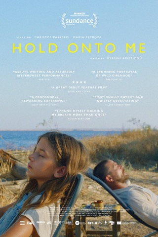

Κράτα Με
From the festival
Play Trailer Winner of the 2026 Sundance Film Festival’s World Cinema Audience Award, Myrsini Aristodou’s sensitive debut resonates with deeply felt authenticity and lasting emotional power. Precocious 11-year-old Iris is used to being on her own. Left alone while her mother vacations with a boyfriend and ignored by her peers, Iris distracts herself by doing what she does best: getting into trouble. When local law enforcement detains her, an unforeseen figure emerges to bail her out, the father she has never known. Though his interests appear selfish, they bond through a shared talent for scams and desire for connection, beginning a delicate dance of testing trust and discovering each other. With an exquisite eye for detail and the confident casting of expressive Maria Petrova, a non-actor, in the role of Iris, Aristodou balances fragility and longing with effortless control, announcing herself not just as a filmmaker to watch, but one worthy of awe. —Landon Zakheim
- Directed by
- Myrsini Aristidou
- Country
- Cyprus / Denmark / Greece
- Year
- 2026
- Running time
- 102 minutes
- Language
- Greek
- Premiere
- Bay Area Premiere
- With
- Christos Passalis, Jenny Sallo, Maria Petrova
Source: Festival website programme (MVFF49): Wayback Machine copy; Festival film page: Wayback Machine copy; Poster from Cinemaclock